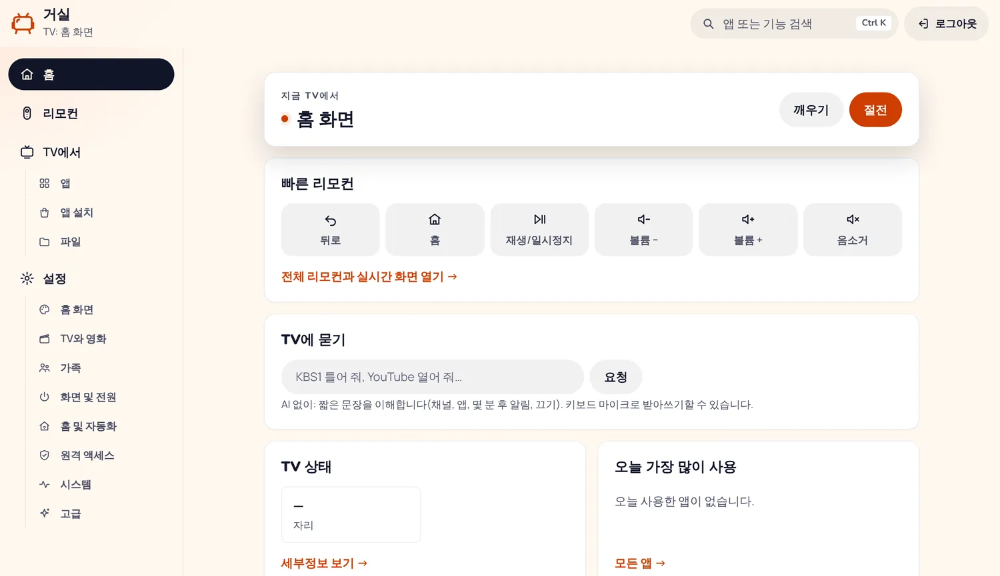
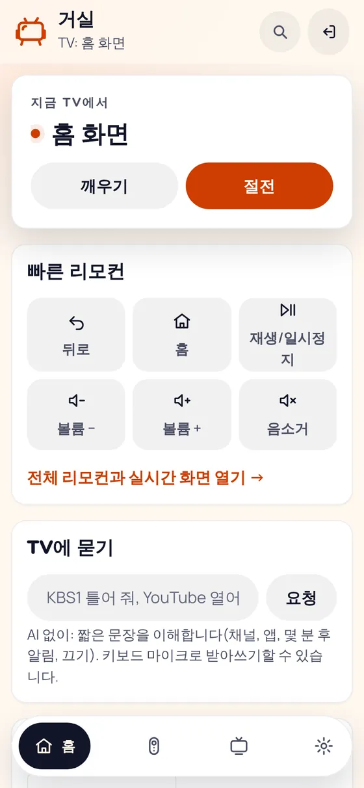
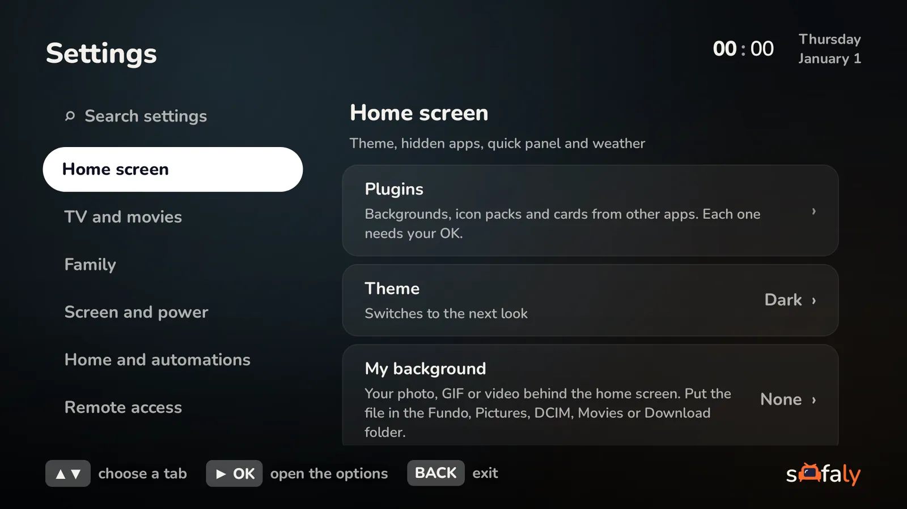
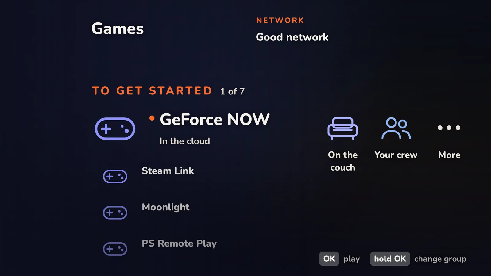
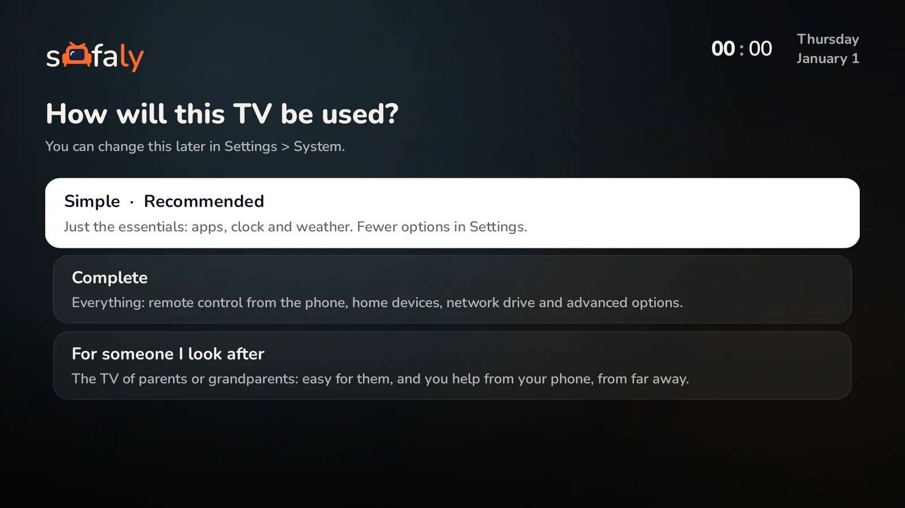

TV를 다시 쉽게. 모든 게 제자리에, 잘 정리된 거실처럼.
그냥 소파에 누워 TV를 보고 싶은 사람을 위해. Sofaly는 TV가 아니라 홈 화면을 바꿉니다: Google은 그대로, 광고는 없고, 모든 것이 한곳에.
하나의 십자, 다섯 개의 세계
이어보기, 보기, 듣기, 게임, 앱. 무엇이든 두 번 클릭으로.
광고 전혀 없음
무료 요금제에서도 스폰서 자리는 하나도 없습니다. 집 밖으로 나가는 추적도 없습니다.
평범한 TV에서도 빠르게
32비트 Chromecast에서 측정: 애니메이션이 기기가 감당하는 만큼 맞춰집니다.
온 가족을 위해
어르신도 편하게
큰 글씨, 앱 이름을 읽어 주는 간편 모드, 고대비, 화면 낭독기. 15개 언어.
당신과 함께 일어납니다
알람이 TV를 스스로 켜고, 볼륨을 천천히 올리고, 좋은 아침을 엽니다. 시간, 날씨, 일정.
집을 살핍니다
Home Assistant의 조명, 장면, 초인종을 TV에서. 모두 나가면 잠듭니다.
휴대폰과 대화합니다
집안 어느 휴대폰이나 컴퓨터에서든 PIN으로 보호된 제어, 입력, 메시지 전송.
정확한 날씨
현재 날씨는 가장 가까운 공항에서 옵니다. 추측이 아니라 측정값. OK 한 번으로 9일 예보.
스스로 관리합니다
매일 밤 보호된 백업, 잠든 사이 유지 관리, 무엇이 잘못됐는지 설명하는 진단.
TV를 휴대폰과 컴퓨터에서도.
같은 네트워크에서 브라우저를 열고 PIN을 입력하면 끝: 리모컨, 한글 입력, TV 화면 실시간 보기, 메모와 설정. 설치도 계정도 필요 없습니다.


- 휴대폰과 컴퓨터의 패널리모컨, 한글 입력, TV 화면 실시간 보기, 화면 보호기 사진, 게시판, 백업을 집안 어느 기기의 브라우저에서든.
- TV에게 부탁하기“YouTube 열어”, “7분 뒤에 알려 줘”, “30분 뒤에 꺼 줘”라고 쓰거나 말하면 TV가 합니다.
- 휴대폰에서 공유패널을 앱으로 설치하면 공유에 나타납니다. YouTube 영상과 링크는 TV에서 열리고, 텍스트는 메시지가 됩니다.
- Windows 바로 가기TV가 파일 탐색기의 네트워크에 패널을 여는 바로 가기와 함께 나타납니다. IP가 바뀌어도요.
- TV를 네트워크 드라이브로끌어다 놓아 파일을 TV로 복사하세요. Windows에서는 휴대폰처럼 내 PC에 나타나고, Mac, Linux, 휴대폰에서는 안전한 WebDAV로.
- 여러 집우리 집 TV와 부모님 집 TV를 같은 휴대폰으로 관리하세요.
실제 패널 화면, 예시 데이터 사용.
122 가지 새로운 일을 TV가 하게 됩니다. 십자가 화면을 정리하듯, 12개의 세계로 정리했습니다.
- 십자누구나 이해하는 깔끔한 화면을, 원하는 대로.19
- 보기영화, 시리즈, 그리고 홈시어터급 플레이어.14
- 듣기라디오와 팟캐스트도 동영상만큼 정성껏.5
- 플레이모든 게임을 한곳에, 컨트롤러 준비 완료.6
- 앱앱을 말이 되는 순서로.3
- 집알람, 타이머, 자동화, 스마트 홈.13
- 날씨와 화면 보호기정확한 날씨와 켜 두고 싶은 화면 보호기.15
- 가족모두에게 프로필, 아이를 위한 배려, 손님 환영.12
- 휴대폰과 컴퓨터TV가 집안 기기와 대화합니다.11
- 스스로 관리합니다기억하지 않아도 백업, 유지 관리, 진단.13
- 모두를 위해보고, 듣고, 리모컨을 쓰는 방식이 다른 사람들을 위해.5
- 개인정보광고 없음, 추적 없음, 필요한 곳에 PIN.6
십자
누구나 이해하는 깔끔한 화면을, 원하는 대로.

십자
이어 보기, 보기, 듣기, 플레이, 앱이 한 줄에. 고른 세계는 커지고, 그 안의 내용이 바로 아래에 나옵니다.
이어 보기
하던 일로 돌아가는 한 곳. 에피소드, 방송국, 팟캐스트, 마지막 앱.
상단 바
검색, 음성, 한 줄 날씨와 시계가 늘 같은 자리에. 둘러보는 동안에는 접혀서 화면이 숨을 쉽니다.
십자
이어 보기, 보기, 듣기, 플레이, 앱이 한 줄에. 고른 세계는 커지고, 그 안의 내용이 바로 아래에 나옵니다.
위치: ◀ ▶ 로 세계 전환, ▲ ▼ 로 열을 따라 이동, OK로 열기.이어 보기
하던 일로 돌아가는 한 곳. 에피소드, 방송국, 팟캐스트, 마지막 앱.
위치: 십자의 첫 항목입니다.상단 바
검색, 음성, 한 줄 날씨와 시계가 늘 같은 자리에. 둘러보는 동안에는 접혀서 화면이 숨을 쉽니다.
위치: ▲ 로 올라가세요.Google은 그대로 작동해요
Google 어시스턴트, Gemini, 검색, Google 계정이 전과 똑같이 작동해요. Sofaly는 TV가 아니라 홈 화면을 바꿉니다.
위치: 평소처럼 마이크 버튼을 쓰세요.빠른 패널
Wi-Fi, 블루투스, 취침 타이머, 소리 출력, 알람, 프로필, 알림, 장보기 목록을 어느 앱에서든.
위치: 뒤로를 길게 누르세요.내 리모컨, 내 규칙
HOME은 언제나 Sofaly로 돌아옵니다. 뒤로 길게 누르면 빠른 패널, HOME 길게 누르면 집, 앱에서 OK 길게 누르면 그 앱의 메뉴.
위치: 키 테스터가 TV가 받는 모든 버튼을 보여 줍니다.재생 중
위쪽 알약 모양에 재생 중인 콘텐츠의 표지와 제목. OK로 일시 정지 또는 재개, OK 길게 누르면 앱이 열립니다.
위치: 홈 화면 › 추가 옵션에서 켜세요.테마와 배경
다크: 선택한 콘텐츠의 아트. 갤러리: 매일 메트로폴리탄 미술관의 그림. 하늘: 위성과 지도. 또는 직접 고른 사진이나 동영상. Overflight의 항공 영상 같은 플러그인 배경도 쓸 수 있습니다.
위치: 다크, 갤러리, 하늘은 Basic, 나머지는 Pro.마음에 드는 아이콘Pro
Play의 아이콘 팩을 쓰거나, 앱 아이콘을 하나씩 바꾸세요.
위치: 앱에서 OK 길게 누르기 › 아이콘 변경.TV에 맞춘 애니메이션
성능 좋은 TV는 모두 움직이고, 단순한 TV는 고른 것만 움직이며 프레임이 떨어지면 스스로 줄여요.
위치: 설정 › 모양.달의 위상Pro
오늘 밤 달과 밝게 보이는 정도를, 인터넷 없이 TV가 직접 계산합니다.
위치: 예보, 화면 보호기, 밤의 날씨 아이콘에 표시. 설정 › 모양.카운트다운Pro
고른 날짜나 다음 공휴일까지 며칠 남았는지.
위치: 화면 위쪽 알약에 표시. 설정 › 모양.집안 알림Pro
고른 요일마다 다시 나타나는 메모: 분리수거 날, 약, 수업.
위치: 화면 위쪽 알약에 표시. 설정 › 모양.서비스 상태Pro
입력한 주소를 TV가 확인하고 작동 중인지 보여 줍니다: 집 서버, 가게 웹사이트.
위치: 화면 위쪽 알약에 표시. 설정 › 모양.오늘의 시세Pro
통화, 비트코인, 이더의 오늘 값을 공개된 공식 데이터에서.
위치: 상단 바의 날씨 옆에 표시. 설정 › 모양.응원 팀의 다음 경기Pro
우리 팀이 다음에 언제, 누구와 경기하는지 홈 화면 카드로.
위치: 십자의 TV 항목에 표시. 설정 › 모양.다른 앱의 카드Pro
Sofaly의 카드 외에도 파트너 앱이 자기 카드를 홈 화면에 올립니다: 배달, 버스, 아파트 공지.
위치: 카드는 보기의 끝에 나옵니다.화면 위쪽의 아일랜드
알림이 위쪽 알약 안에서 번갈아 나옵니다: 인터넷 끊김, 리마인더, 일정, 알람. 중요한 것은 “▲ 눌러 열기”와 함께 5초간 커지고, 홈 초인종은 바로 뜨며, TV를 켜면 그동안 있었던 일의 요약이 나옵니다. 십자 위쪽에서 ▲를 길게 누르면 센터가 열립니다.
위치: 홈 화면, 위쪽.딱 맞는 시간에 딱 맞는 추천
인공지능 없이: 한 주의 사용 기록으로 그 시간에 맞는 것을 TV가 추천합니다.
위치: 홈 화면.
보기
영화, 시리즈, 그리고 홈시어터급 플레이어.

컴퓨터에서
Plex, Jellyfin, Emby, PC나 NAS 폴더(SMB, WebDAV, FTP, SFTP, NFS), OneDrive, Dropbox, Box, Google 드라이브, UPnP, USB 메모리의 동영상, 음악, 사진.
무엇이든 재생하는 플레이어
Dolby(AC3, E-AC3), DTS, TrueHD 사운드와 블루레이, DVD, 애니메이션 자막을 Kodi나 VLC 설치 없이.
멈춘 곳에서 이어서
영화와 에피소드가 정확한 지점에서 다시 시작됩니다. 다음 에피소드는 10초 뒤 시작되고, 3편 연속이면 아직 보고 있는지 묻습니다.
컴퓨터에서
Plex, Jellyfin, Emby, PC나 NAS 폴더(SMB, WebDAV, FTP, SFTP, NFS), OneDrive, Dropbox, Box, Google 드라이브, UPnP, USB 메모리의 동영상, 음악, 사진.
위치: 켜져 있는 서버와 USB 메모리는 저절로 나타나고, 나머지는 추가에서.무엇이든 재생하는 플레이어
Dolby(AC3, E-AC3), DTS, TrueHD 사운드와 블루레이, DVD, 애니메이션 자막을 Kodi나 VLC 설치 없이.
위치: 재생 중 ▼ 를 눌러 오디오, 자막, 자막 크기를 선택.멈춘 곳에서 이어서
영화와 에피소드가 정확한 지점에서 다시 시작됩니다. 다음 에피소드는 10초 뒤 시작되고, 3편 연속이면 아직 보고 있는지 묻습니다.
위치: 저절로 작동합니다.오프닝 건너뛰기
시리즈의 오프닝이 알려져 있으면 “오프닝 건너뛰기 · OK”가 나옵니다. 한 번 표시해 두면 TV가 기억합니다.
위치: 기본으로 켜져 있음.원하는 오디오와 자막
자막 있는 원어 또는 더빙을 한 번 고르면 작품마다 기억합니다. 파일에 자막이 없으면 인터넷에서.
위치: TV와 영화 › 오디오와 자막.끊김 없는 영화
영화가 재생되는 동안 TV가 24Hz로 바뀌어 카메라 움직임이 부드러워요.
위치: 영화와 함께 켜져요. 화면이 1초쯤 검게 깜빡여요.더 잘 보고 더 잘 듣기
검은 상자나 노란색 자막, 대사를 살리는 “더 선명한 목소리”, 시끄러운 영화는 줄이고 조용한 영화는 키우는 “고른 볼륨”.
위치: 플레이어 ▼ 메뉴에서.자동 자막Ultra
내 언어 자막이 없으면 TV가 있는 자막을 번역합니다.
위치: 플레이어 자막 메뉴에서 선택.완전한 영화 페이지Ultra
포스터, 평점, 출연진, 예고편, 관람 등급, 시리즈 작품을 큰 글씨의 멋진 페이지로. “이 배우는 누구?”로 사진, 배역, 다른 작품까지.
위치: 영화나 시리즈에서 OK.Trakt와 Simkl 목록Pro
보고 싶은 것과 본 것을 계정과 다른 기기와 동기화.
위치: TV와 영화 › 서비스의 QR로 로그인.하나의 검색으로 전부
영화, 시리즈, 방송국, 앱을 한 번에 찾고, 같은 검색을 YouTube, Netflix, Prime Video로 이어 갑니다.
위치: 상단 바에서, 또는 음성으로.자막 두 개를 동시에
예를 들어 아래에는 한국어, 위에는 원어. 공부할 때나 함께 볼 때.
위치: 플레이어 ▼ 메뉴 › 자막.더 또렷한 대사
5.1 사운드가 스테레오가 될 때도 대사는 앞에, 폭발음이 목소리를 덮지 않습니다.
위치: 플레이어 ▼ 메뉴.스포일러 없음과 두 번째 언어
아직 안 본 에피소드의 줄거리는 숨겨집니다. 내 언어로 된 음성이나 자막이 없으면 골라 둔 두 번째 언어가 나옵니다.
위치: TV와 영화 › 오디오와 자막.
듣기
라디오와 팟캐스트도 동영상만큼 정성껏.

전 세계 라디오
수천 개의 공개 방송국을 이름, 국가, 장르로. 즐겨찾기와 최근 들은 방송국까지.
팟캐스트
이름으로 구독하고, TV에서 듣고, 멈춘 곳에서 이어 듣기.
팟캐스트 찾기
공개 팟캐스트 카탈로그 전체를 검색하고, 내 나라에서 인기 있는 것을 보세요.
전 세계 라디오
수천 개의 공개 방송국을 이름, 국가, 장르로. 즐겨찾기와 최근 들은 방송국까지.
위치: 듣기 › 라디오.팟캐스트
이름으로 구독하고, TV에서 듣고, 멈춘 곳에서 이어 듣기.
위치: 듣기 › 팟캐스트.팟캐스트 찾기Pro
공개 팟캐스트 카탈로그 전체를 검색하고, 내 나라에서 인기 있는 것을 보세요.
위치: 듣기 › 팟캐스트 › 검색.전체 화면 플레이어
큰 표지, 챕터, 재생 속도, 에피소드 끝에서 멈추는 취침 타이머.
위치: 듣기 › 재생 중 › 플레이어 열기.소리는 이어폰으로Pro
영화 소리가 휴대폰 이어폰으로 동기화되어 나갑니다. 밤에도 아무도 깨우지 않고 볼 수 있습니다.
위치: 플레이어 ▼ 메뉴 › 휴대폰으로 소리.
플레이
모든 게임을 한곳에, 컨트롤러 준비 완료.

모든 게임을 한곳에
GeForce NOW, Steam Link, Moonlight, PS Remote Play, RetroArch, TV 게임이 앱 줄을 떠나 플레이에 모입니다. 클라우드, PC에서, 레트로, TV에서로 분류.
위층 PC로 게임하기
TV가 네트워크로 컴퓨터를 깨우고, 응답을 기다린 뒤 Moonlight나 Steam Link를 엽니다. 네트워크로 PC 깨우기는 게임 밖에서도 홈 화면 바로가기로 쓸 수 있습니다.
네트워크 테스트
인터넷이 클라우드 게임을 감당할 수 있는지 알려 주고, 약한 네트워크에서 클라우드 게임을 열기 전에 경고합니다.
모든 게임을 한곳에
GeForce NOW, Steam Link, Moonlight, PS Remote Play, RetroArch, TV 게임이 앱 줄을 떠나 플레이에 모입니다. 클라우드, PC에서, 레트로, TV에서로 분류.
위치: 게임에서 OK를 길게 눌러 그룹 변경.위층 PC로 게임하기
TV가 네트워크로 컴퓨터를 깨우고, 응답을 기다린 뒤 Moonlight나 Steam Link를 엽니다. 네트워크로 PC 깨우기는 게임 밖에서도 홈 화면 바로가기로 쓸 수 있습니다.
위치: 웹 패널에서 컴퓨터를 한 번 저장.네트워크 테스트
인터넷이 클라우드 게임을 감당할 수 있는지 알려 주고, 약한 네트워크에서 클라우드 게임을 열기 전에 경고합니다.
위치: 플레이 › 네트워크 테스트.게임 컨트롤러
메뉴를 뒤지지 않고 컨트롤러를 연결하고, 연결된 것을 위쪽에서 확인. 원하면 컨트롤러가 연결될 때 플레이가 열리게.
위치: 플레이 › 컨트롤러 연결.게임 모드
게임이 열려 있는 동안 화면 보호기, 야간 필터, 알림이 경기가 끝날 때까지 기다립니다.
위치: 저절로 켜집니다.Discord 크루
Discord 서버에서 누가 온라인이고 어떤 게임 중인지 보고, TV에서 바로 크루를 부르세요.
위치: 서버 위젯을 켜고 번호를 붙여 넣으세요.
앱
앱을 말이 되는 순서로.
자주 쓰는 앱을 앞으로
앱에는 가장 많이 여는 8개가 나오고, “모든 앱”에서 나머지를 격자로 봅니다.
내 방식대로
어떤 앱이든 옮기고, 묶고, 숨기세요. 안 쓰는 기본 앱은 비켜 줍니다.
자유로운 Netflix·YouTube 버튼
리모컨의 앱 버튼으로 원하는 앱을 엽니다. 눌러서 열고, 3초 길게 눌러 바꾸기.
자주 쓰는 앱을 앞으로
앱에는 가장 많이 여는 8개가 나오고, “모든 앱”에서 나머지를 격자로 봅니다.
위치: 십자의 앱.내 방식대로
어떤 앱이든 옮기고, 묶고, 숨기세요. 안 쓰는 기본 앱은 비켜 줍니다.
위치: 앱에서 OK 길게 누르기.자유로운 Netflix·YouTube 버튼
리모컨의 앱 버튼으로 원하는 앱을 엽니다. 눌러서 열고, 3초 길게 눌러 바꾸기.
위치: 기본 리모컨으로 작동.
집
알람, 타이머, 자동화, 스마트 홈.

TV를 켜는 알람
시간이 되면 TV가 스스로 켜지고, 볼륨이 천천히 올라가며, 다시 알림도 있습니다. 알람마다 이름, 요일, 소리, 볼륨, 심지어 앱이나 마지막 라디오도.
타이머와 모래시계
이름 붙인 타이머 최대 3개와 화면 알림, 그리고 스톱워치.
부드러운 꺼짐
취침 타이머가 마지막 5분 동안 화면을 어둡게 하고 볼륨을 줄여, 꺼질 때 아무도 깨지 않습니다.
TV를 켜는 알람
시간이 되면 TV가 스스로 켜지고, 볼륨이 천천히 올라가며, 다시 알림도 있습니다. 알람마다 이름, 요일, 소리, 볼륨, 심지어 앱이나 마지막 라디오도.
위치: 뒤로 길게 누르기 › 알람.타이머와 모래시계
이름 붙인 타이머 최대 3개와 화면 알림, 그리고 스톱워치.
위치: “Hey Google, 10분 뒤에 알려 줘 열어 줘”.부드러운 꺼짐
취침 타이머가 마지막 5분 동안 화면을 어둡게 하고 볼륨을 줄여, 꺼질 때 아무도 깨지 않습니다.
위치: 빠른 패널의 타이머 타일.아무도 안 보면 꺼짐
정한 시간 동안 버튼을 누르지 않으면 TV가 큰 글씨로 아직 보고 있는지 묻고, 잠듭니다.
위치: 화면 및 전원 › 사용하지 않으면 끄기.준비된 레시피
잠자기, 드라마, 경기가 TV를 한 번에 설정합니다(소리, 화면, 알림). OK 한 번에 적용, 다시 한 번에 되돌리기.
위치: 빠른 패널.자동화Pro
정한 시간에, 버튼을 누를 때, 또는 무슨 일이 생길 때(영화 일시 정지, 모두 외출, 곧 비): TV가 앱을 열거나, 장면을 실행하거나, 꺼집니다.
위치: 집과 자동화 › 자동화.TV에서 Home AssistantPro
조명, 콘센트, 선풍기, 블라인드, 에어컨, 장면을 소파에서. 클라우드를 거치지 않고 내 네트워크의 서버와 직접 대화합니다.
위치: HOME 길게 누르기.문 앞에 누가Pro
초인종이 울리면 카메라 사진이 보고 있는 화면 위에 뜹니다.
위치: Home Assistant와 함께.모두 나가면 잠들기
UniFi 공유기가 있으면 TV가 가족 휴대폰이 나간 것을 알아채고 잠듭니다.
위치: 화면 및 전원 › 추가 옵션.음성 단축키
“Hey Google, 날씨 브리핑 열어 줘”라고 하면 예보를 소리 내어 읽습니다. 영화, 우리 집, 게시판, 타이머, 끄기도 같은 방식으로 열립니다.
위치: 마이크 버튼을 쓰세요.TV와 함께 켜짐
TV 자체 리모컨으로 켰나요? 기기도 함께 깨어나고, 검은 화면은 없습니다. LG 볼륨도 네트워크로, 기기가 잠들면 LG도 함께 꺼집니다.
위치: 저절로 켜집니다.방해 금지
정한 시간에는 알림과 소리가 기다립니다.
위치: 홈과 자동화.“조건부”와 공휴일
평일에만, 누가 집에 있을 때만, 비 올 때만 실행되는 자동화. 우리나라 공휴일도 압니다.
위치: 집과 자동화 › 자동화.
날씨와 화면 보호기
정확한 날씨와 켜 두고 싶은 화면 보호기.
측정한 오늘 날씨
기온은 가장 가까운 공항의 관측 보고에서 오고, 낮/밤 아이콘은 TV가 있는 곳의 일출과 일몰을 따릅니다.
세 모델로 보는 비
강수 확률은 세 날씨 모델(ECMWF, ICON, GFS)의 중앙값이라, 어느 하나보다 덜 틀립니다.
전체 화면 예보
앞으로 24시간, 강수 그래프, 9일, 대기 질, 해와 달.
측정한 오늘 날씨
기온은 가장 가까운 공항의 관측 보고에서 오고, 낮/밤 아이콘은 TV가 있는 곳의 일출과 일몰을 따릅니다.
위치: 홈 화면 위쪽.세 모델로 보는 비Ultra
강수 확률은 세 날씨 모델(ECMWF, ICON, GFS)의 중앙값이라, 어느 하나보다 덜 틀립니다.
위치: 예보에 저절로 나옵니다.전체 화면 예보
앞으로 24시간, 강수 그래프, 9일, 대기 질, 해와 달.
위치: 날씨에서 OK.비 알림
비가 오기 직전에 앱 위로 알림. 빨래 걷을 시간입니다.
위치: 홈 화면 › 날씨.켜 두고 싶은 화면 보호기
인사, 큰 시계, 날짜, 날씨, 그리고 알림, 다음 알람, 메시지 카드. 갤러리 테마에서는 오늘의 그림이 천천히 움직여 번인을 막습니다.
위치: 화면 및 전원 › 화면 보호기.화면 보호기에 내 사진
휴대폰에서 사진을 보내거나 네트워크 폴더를 고르세요. TV만 볼 수 있는 폴더에 보관됩니다.
위치: QR이 패널의 해당 페이지를 엽니다.좋은 아침
알람을 끄면 인사, 시간, 예보, 오늘 일정. TV가 소리 내어 읽어 줄 수도 있습니다.
위치: “Hey Google, 좋은 아침 열어 줘”.Google 캘린더
오늘의 일정과 생일을 TV에서, 한 계정이나 모든 계정을 함께.
위치: 위쪽 날짜에서 OK.야간 필터
밤에는 화면이 더 따뜻하고 눈에 편해집니다.
위치: 화면 및 전원 › 추가 옵션.주간 요약
일요일 밤, 앱별 시청 시간, 사용한 인터넷, 네트워크 끊김을 담은 카드.
위치: 화면 및 전원 › 추가 옵션.폭염·한파 경고
비 경고와 같은 알림을, 폭염이나 한파가 올 때 어떤 화면 위에든.
위치: 홈 화면 › 날씨.밤하늘
행성, 우주정거장, 일식과 월식을 TV에서 직접 계산. 인터넷 없이.
위치: 화면 보호기.우주에서 본 지구
우주비행사가 찍은 사진과 우리 동네 지도가 있는 진짜 하늘 테마.
위치: 화면 및 전원 › 화면 보호기.재미있는 사실과 글로 쓴 시각
화면 보호기에 재미있는 사실을 하나씩, 시계는 글로: “아홉 시 오십일 분”.
위치: 화면 보호기.우리 TV의 한 해
12월에는 한 해 돌아보기: TV에서 가장 많이 보고, 듣고, 한 것. TV 안에만 남습니다.
위치: 12월에 나타납니다.
가족
모두에게 프로필, 아이를 위한 배려, 손님 환영.

모두에게 프로필
TV의 Google 계정마다 즐겨찾기, 이어 보기, 앱 순서가 따로 있습니다.
어린이 프로필
프로필을 어린이로 표시하면 어린이 모드와 취침 시간이 저절로 켜지고, 나가려면 부모 PIN이 필요합니다.
취침 시간
정한 시간에는 허용한 앱만 열리고 볼륨에 상한이 생깁니다.
모두에게 프로필
TV의 Google 계정마다 즐겨찾기, 이어 보기, 앱 순서가 따로 있습니다.
위치: 뒤로 길게 누르기 › 프로필.어린이 프로필
프로필을 어린이로 표시하면 어린이 모드와 취침 시간이 저절로 켜지고, 나가려면 부모 PIN이 필요합니다.
위치: 빠른 패널 › 프로필.취침 시간
정한 시간에는 허용한 앱만 열리고 볼륨에 상한이 생깁니다.
위치: 가족 › 추가 옵션.하루 시청 시간
고른 사람에게 하루 TV 시청 한도를.
위치: 가족 › 추가 옵션.게스트 모드
손님이 있는 동안 내 프로필, 일정, 고른 앱을 숨깁니다.
위치: 빠른 패널의 게스트 타일.손님용 Wi-Fi
비밀번호를 한 번 입력하면, 손님은 TV의 QR을 스캔해 바로 연결합니다.
위치: 가족 › 손님용 Wi-Fi.가족 게시판
장보기 목록, 고정 메모, 오늘의 생일을 빠른 패널과 화면 보호기에.
위치: 휴대폰에서 편집, OK로 항목 체크.멀리서 온 메시지Pro
멀리 사는 가족이 어디서든 집 TV로 메시지와 사진을 보냅니다.
위치: 링크로 초대.영상 메시지Pro
가족의 짧은 영상이 보낸 사람 이름과 함께 TV에 나옵니다.
위치: 휴대폰의 패널에서.연령 등급
키즈 모드에서 카테고리와 함께 연령에 맞는 영화와 시리즈를.
위치: 가족.호스트 모드
숙박 공유용: 손님이 TV를 쓰고, 내 것은 보관되었다가 숙박이 끝나면 돌아옵니다.
위치: 가족 › 추가 옵션.멀리서 돌보기
혼자 사는 분이 키를 길게 눌러 도움을 요청하면, 돌보는 사람의 휴대폰에 알림이 갑니다. 사는 분이 TV에서 직접 동의해야만 켜집니다.
위치: 가족 › 멀리서 돌보기.
휴대폰과 컴퓨터
TV가 집안 기기와 대화합니다.

휴대폰과 컴퓨터의 패널
리모컨, 한글 입력, TV 화면 실시간 보기, 화면 보호기 사진, 게시판, 백업을 집안 어느 기기의 브라우저에서든.
TV에게 부탁하기
“YouTube 열어”, “7분 뒤에 알려 줘”, “30분 뒤에 꺼 줘”라고 쓰거나 말하면 TV가 합니다.
휴대폰에서 공유
패널을 앱으로 설치하면 공유에 나타납니다. YouTube 영상과 링크는 TV에서 열리고, 텍스트는 메시지가 됩니다.
휴대폰과 컴퓨터의 패널
리모컨, 한글 입력, TV 화면 실시간 보기, 화면 보호기 사진, 게시판, 백업을 집안 어느 기기의 브라우저에서든.
위치: 원격 접속 › 휴대폰으로 로그인(QR).TV에게 부탁하기Pro
“YouTube 열어”, “7분 뒤에 알려 줘”, “30분 뒤에 꺼 줘”라고 쓰거나 말하면 TV가 합니다.
위치: 휴대폰의 패널에서.휴대폰에서 공유Pro
패널을 앱으로 설치하면 공유에 나타납니다. YouTube 영상과 링크는 TV에서 열리고, 텍스트는 메시지가 됩니다.
위치: 공유 › Sofaly.TV를 네트워크 드라이브로Pro
끌어다 놓아 파일을 TV로 복사하세요. Windows에서는 휴대폰처럼 내 PC에 나타나고, Mac, Linux, 휴대폰에서는 안전한 WebDAV로.
위치: 원격 접속 › 네트워크 드라이브로 표시.Windows 바로 가기Pro
TV가 파일 탐색기의 네트워크에 패널을 여는 바로 가기와 함께 나타납니다. IP가 바뀌어도요.
위치: 패널이 켜져 있으면 항상.다른 TV에서 이어 보기Pro
거실에서 멈췄나요? 침실로 보내세요. 다른 TV가 “멈춘 곳에서 이어 볼까요?”를 띄우고 같은 지점에서 엽니다.
위치: 플레이어 메뉴 › 다른 TV로 보내기.함께 보기Ultra
두 집이 같은 것을 동시에 봅니다. 여기서 멈추면 저기서도 멈추고, 구석에 반응도.
위치: 가족 TV끼리 초대.여러 집Ultra
우리 집 TV와 부모님 집 TV를 같은 휴대폰으로 관리하세요.
위치: 휴대폰 앱에서.Claude로 TV와 대화
Claude를 통해 TV와 대화하세요: 지금 무엇이 나오는지 알려 주고, 앱을 열고, 설정도 바꿉니다. 화면의 QR 하나면 끝, 키도 비밀번호도 없습니다.
위치: 원격 접속 › 인터넷으로 Claude.휴대폰 키보드
TV에 입력창이 열렸나요? 키보드가 휴대폰에 나타납니다.
위치: 패널과 함께 저절로 켜집니다.휴대폰으로 알림
알람, 초인종, 메모가 휴대폰으로 옵니다. 중간에 서버 없이.
위치: 패널 › 휴대폰으로 알림.
스스로 관리합니다
기억하지 않아도 백업, 유지 관리, 진단.

새 TV로 2분 만에
TV를 새로 샀나요? QR을 읽으면 모든 것이 암호화되어 옮겨집니다.
매일 밤 보호된 백업
TV가 쉬는 동안 비밀번호로 보호한 전체 백업. 최근 7개를 보관하고, 매일 밤 복원 가능한지 확인합니다.
클라우드에 사본
사본은 Google 드라이브, OneDrive, Dropbox, Box, NAS, USB 메모리로도 갑니다. 보호되어 클라우드조차 읽을 수 없습니다.
새 TV로 2분 만에
TV를 새로 샀나요? QR을 읽으면 모든 것이 암호화되어 옮겨집니다.
위치: 시스템 › 백업 › 새 TV로 옮기기.매일 밤 보호된 백업
TV가 쉬는 동안 비밀번호로 보호한 전체 백업. 최근 7개를 보관하고, 매일 밤 복원 가능한지 확인합니다.
위치: 시스템 › 자동 백업.클라우드에 사본Pro
사본은 Google 드라이브, OneDrive, Dropbox, Box, NAS, USB 메모리로도 갑니다. 보호되어 클라우드조차 읽을 수 없습니다.
위치: 시스템 › 자동 백업.야간 유지 관리
잠든 사이 찌꺼기를 치우고, 권한을 고치고, 알람을 다시 예약합니다.
위치: 저절로 작동합니다.TV 진단
인터넷, DNS, 앱이 멈춘 이유를 한 번에, 알아듣기 쉬운 문장으로.
위치: “Hey Google, TV 진단 열어 줘”.속도 테스트
한 번 눌러 인터넷을 측정하고 Wi-Fi 신호, 지연 시간, 속도를 쉬운 말로 보여줘요.
위치: 설정 › 고급 › 네트워크.이 TV의 상태
TV가 스스로 수치(여는 시간, 오류, 정시 알람)를 재고 한 화면에 보여 줍니다. 아무것도 집 밖으로 나가지 않습니다.
위치: 시스템 › 이 TV의 상태.안전 모드
새 버전이 설치 직후 문제를 일으키면 TV가 안전 모드로 전환하고 빠져나갈 길을 보여 줍니다.
위치: 필요할 때만 나타납니다.바뀐 점
버전마다 무엇이 바뀌었는지 설명하고, 리모컨으로 해 볼 짧은 목록을 줍니다.
위치: 시스템 › 바뀐 점.문제 신고
무슨 일이 있었는지 리모컨이나 휴대폰으로 알려 주세요. TV가 필요한 것만 모으고, 개인 정보는 없습니다.
위치: 시스템 › 문제 신고.저절로 돌아오는 Wi-Fi
끊긴 뒤 Wi-Fi가 돌아오지 않으면 TV가 스스로 다시 연결합니다.
위치: 저절로 켜집니다.인터넷이 없어도 당황하지 않게
인터넷이 돌아올 때까지 무엇이 계속 되는지 홈 화면이 한 줄로 알려 줍니다.
위치: 필요할 때만 나타납니다.기본 앱 정리
TV에 처음부터 있던, 쓰지 않는 앱을 되돌리기와 함께 치우고, 측정한 전후를 보여 줍니다.
위치: 시스템 › 정리.
모두를 위해
보고, 듣고, 리모컨을 쓰는 방식이 다른 사람들을 위해.

15개 언어
포르투갈어, 영어, 스페인어, 프랑스어, 독일어, 이탈리아어, 러시아어, 폴란드어, 튀르키예어, 일본어, 중국어, 한국어, 힌디어, 인도네시아어, 아랍어(오른쪽에서 왼쪽 화면 지원). TV 언어를 따릅니다.
글자 크기
보통, 크게, 더 크게를 모든 화면에서. 글자가 잘리거나 겹치지 않도록 테스트했습니다.
간편 모드
큰 카드, 화면에 더 적은 것, 앱 이름을 소리 내어 말하기. 리모컨이 어려운 분을 위해.
15개 언어
포르투갈어, 영어, 스페인어, 프랑스어, 독일어, 이탈리아어, 러시아어, 폴란드어, 튀르키예어, 일본어, 중국어, 한국어, 힌디어, 인도네시아어, 아랍어(오른쪽에서 왼쪽 화면 지원). TV 언어를 따릅니다.
위치: TV와 함께 저절로 바뀝니다.글자 크기
보통, 크게, 더 크게를 모든 화면에서. 글자가 잘리거나 겹치지 않도록 테스트했습니다.
위치: 홈 화면 › 글자 크기.간편 모드
큰 카드, 화면에 더 적은 것, 앱 이름을 소리 내어 말하기. 리모컨이 어려운 분을 위해.
위치: 홈 화면 › 추가 옵션.소리 내어 읽기
TV가 선택한 항목을 말해 주고, 탐색 소리로 지금 어디 있는지 알려 줍니다.
위치: 홈 화면 › 추가 옵션.고대비
7:1 대비의 글자, 모든 화면을 Android 화면 낭독기로 읽을 수 있습니다.
위치: TV의 접근성 설정을 따릅니다.
개인정보
광고 없음, 추적 없음, 필요한 곳에 PIN.
광고 전혀 없음
무료 요금제에도, 스폰서 추천 하나 없습니다. 화면은 당신의 것.
추적 없음
계정 없음, 사용 분석 없음, 직접 보내지 않으면 오류 보고도 나가지 않습니다.
필요한 곳에 PIN
TV를 바꾸는 모든 것은 PIN을 요구하고, 무언가 지우는 작업은 다시 묻습니다. 너무 많이 틀렸나요? 기다리는 시간이 매번 늘어납니다.
광고 전혀 없음
무료 요금제에도, 스폰서 추천 하나 없습니다. 화면은 당신의 것.
위치: 언제나.추적 없음
계정 없음, 사용 분석 없음, 직접 보내지 않으면 오류 보고도 나가지 않습니다.
위치: 언제나.필요한 곳에 PIN
TV를 바꾸는 모든 것은 PIN을 요구하고, 무언가 지우는 작업은 다시 묻습니다. 너무 많이 틀렸나요? 기다리는 시간이 매번 늘어납니다.
위치: 원격 접속 › PIN.개인 DNS
안전한 DNS(DNS over TLS)를 고르세요. 응답하지 않으면 TV가 스스로 이전 설정으로 돌아갑니다.
위치: 고급 › 네트워크.앱별 인터넷
각 앱이 인터넷을 얼마나 썼고 누구와 통신했는지 TV에 7일간 보관합니다.
위치: 고급 › 네트워크.홈 화면 변경에 PIN
아무도 화면을 어지르지 못합니다: 옮기기, 숨기기, 바꾸기에는 PIN이 필요합니다.
위치: 홈 화면 › 추가 옵션.
사람들이 정말로 보는 홈 화면에 당신의 앱을.
Sofaly 플러그인은 여러분의 Android TV 앱입니다. 짧은 카드를 보내면 Sofaly가 홈 화면에 큰 글씨로, 집의 스타일대로 그립니다.
- 배달12분
- 42번 버스6분
- 헬스장19시
플러그인을 만드는 이유
서랍이 아닌 정면에
카드는 가족이 TV를 켤 때마다 보는 홈 화면에 있고, 앱 목록 속에 묻히지 않습니다.
SDK 없이, 비용 없이
ContentProvider 하나와 데이터 한 줄. 설치할 라이브러리도, 낼 수수료도 없습니다.
당신의 앱, 당신의 비즈니스
Play에 원하는 대로, 무료든 유료든 출시하세요. Sofaly는 카드만 그리고, 앱과 고객은 당신의 것입니다.
우리 카드 말고도 만들 수 있는 것
- 배달주문 출발, 12분 뒤 도착.
- 버스42번 6분 뒤 도착.
- 헬스장오늘 수업 19시.
- 아파트내일 9시부터 12시까지 단수.
- 가게오늘의 할인: 커피 20%.
- 동호회연습이 토요일로 변경.
두 단계
- Sofaly 액션으로 provider 선언
- 제목, 값, 세부 내용, 색상 한 줄로 응답
바로 쓰는 템플릿 오늘 빌드할 수 있는 예제 앱 두 개: 사용자가 TV에서 고른 날짜까지의 카운트다운과 오늘의 달 위상. 인터넷 없이, 계정 없이. MIT No Attribution 라이선스: 복사하고, 패키지를 바꾸고, 출시하세요.
시청자를 지키는 규칙
- 홈 화면에 직접 그리지 않습니다. 텍스트와 색상을 보내면 Sofaly가 그립니다.
- Sofaly는 사용자의 앱, 계정, 시청 내용에 대해 어떤 것도 보내지 않습니다.
- 플러그인은 Pro 요금제의 일부이며, 어떤 것을 보일지는 사용자가 고릅니다.
이미 TV에서: 플러그인 배경, 아이콘 팩, 플러그인 진열대를 TV에서 바로.
요금제무료로 시작하고, 원할 때 키우세요.
Basic만으로도 홈 화면 전체, 플레이어, 듣기, 플레이, 알람, 화면 보호기가 있습니다. Pro와 Ultra는 휴대폰, 집, 가족 기능을 더합니다.
가격은 앱이 Google Play에 나올 때 공개됩니다.
자주 묻는 질문소파에서 묻는 질문
우리 TV에서 되나요?
설치하려면 컴퓨터가 필요한가요?
제 앱은 그대로인가요?
광고가 있나요?
채널이나 영화가 들어 있나요?
Google 홈 화면으로 돌아가고 싶다면?
TV를 다시 쉽게.
설치하고 HOME을 누르면, 온 가족이 이해합니다.
TV의 Downloader 앱에서 이 코드를 입력하세요 6566820
또는 APK 받기 sofaly.tv/download